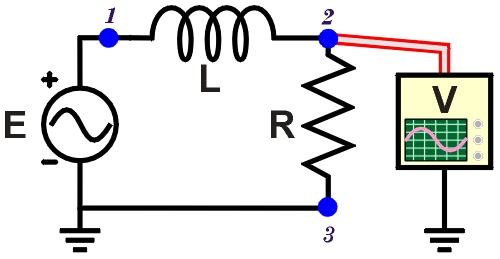
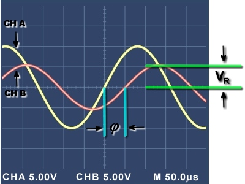

Measuring Voltage in AC Circuits
|  |
|
Figure 1. Measuring voltage VR
dropped across R in an AC circuit. |
As discussed in another tutorial, there are three different measures of AC voltage: VP-P, VP, and VRMS. The last one, VRMS, is usually measured with an AC voltmeter. Here we will consider the peak voltage, VP, measured with an oscilloscope.
Where to Measure?
In most AC circuits, the reference point is the circuit ground. In SPARKS circuits, the negative oscilloscope probe is already connected to the circuit ground—the same as the function generator ground.
Consider the simple AC circuit in Figure 1. We can connect the voltmeter probe to three possible points:
- Point 1: This will read the voltage of the power source (function generator).
- Point 2: This will read the voltage drop across the resistor.
- Point 3: This will read a constant zero, since it is at the same potential as ground.
In the SPARKS oscilloscope, Channel A automatically shows the signal at Point 1—the power source. So, placing the Channel B probe on Point 2 (or similar) is the only other meaningful measurement.
Although the example here uses a resistor-inductor (RL) circuit, the same principles apply to the other AC circuits in SPARKS.
Measuring an RL circuit
|  |
|
Figure 2. Supply voltage leads voltage VR by phase angle φ. |
Consider the circuit in Figure 1 and the measurement at Point 2 shown in Figure 2. Notice that:
- Resistor R is connected to ground, so…
- The oscilloscope probe placed at Point 2 measures the voltage drop, VR.
- The VR curve shows less voltage than the supply voltage E.
- The supply voltage E leads VR by a phase difference φ.
Using the volts/division values and the vertical position of the peaks, we can calculate the voltage measure for each channel. Here, both are displayed with the vertical scale of 5.00 V/div. Channel B shows that VR has a peak voltage of about 1.1 divisions × 5.00 V/div = 5.5 V.
What causes the voltage VR in Figure 1? It is the result of the circuit current. Thus, when measuring VR, by Ohm's Law we learn something about the alternating circuit current: I = VR/R.
For example, we can observe the phase difference of this circuit's current. See the spacing between two similar points where the curves rise and cross the horizontal axis? Here we see that the source voltage E on Channel A is leading VR on Channel B (same as the circuit current I) by about 50 μs. As expected, in an inductive series circuit, the voltage E leads the current I. (Remember: ELI the ICEman.) How would you expect the curves to be different with a series capacitive circuit?